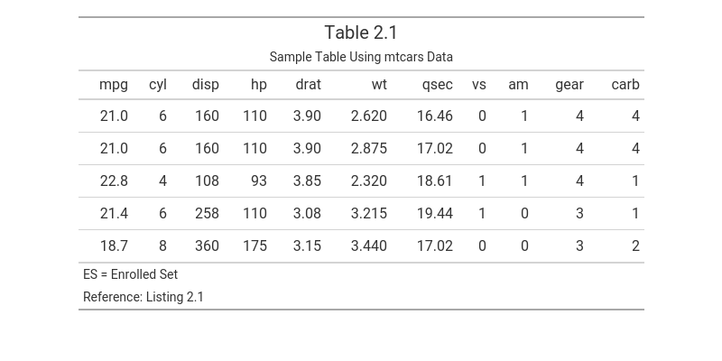

Overview
tflmetaR provides a simple interface for retrieving titles, headers, and footnotes for tables, listings, and figures (TFLs) in clinical study reports (CSRs) or other formal deliverables from a metadata file.
Best practices in programming recommend separating code from metadata to improve readability, maintainability, and scalability. However, many R scripts used for clinical reporting still hardcode TFL annotations directly in the programs, making codebases difficult to manage and extend.
tflmetaR bridges this gap. Although independent and self-contained, it is compatible with the {gridify} and integrates with the Pharmaverse ecosystem for generating submission-ready statistical deliverables.
tflmetaR supports two workflows: a concise single-function interface and a more flexible helper-function workflow.
Metadata File
The metadata file can be an Excel file (.xlsx, .xls) or a CSV file (.csv), with standardized column names. Required columns are PGMNAME (program name), TTL1 (primary title), FOOT1 (first footnote), and SOURCE (data source). Additional columns for subtitles (TTL2, TTL3, …), further footnotes (FOOT2, FOOT3, …), population definitions, book mark and bylines are also supported. If your file uses different column names, use change_colname() to remap them to the expected names before passing the file to any tflmetaR function.
Workflow
The typical workflow is to retrieve annotation metadata from a metadata file and apply it to a TFL object created with packages such as {gt}, {flextable}, or {ggplot2}, or with lower-level grid tools such as grob or gtable. Metadata can be retrieved in two ways.
Option 1: Single-function interface
Use tflmetaR() to retrieve the required metadata in a single call:
path <- system.file("extdata", "sample_titles.xlsx", package = "tflmetaR")
pgmname <- "t_dm"
title_info <- tflmetaR(
path,
by_value = pgmname,
annotation = "TITLE",
add_footr_tstamp = FALSE
)
footnotes <- tflmetaR(
path,
by_value = pgmname,
annotation = "FOOTR",
add_footr_tstamp = FALSE
)Option 2: Helper-function workflow (recommended)
Read the metadata file once with read_tfile(), then retrieve the required metadata with the get_*() helper functions. This avoids repeated I/O operations when annotating multiple fields:
meta <- read_tfile(filename = path)
title_info <- get_title(meta, pname = pgmname)
footnotes <- get_footnote(meta, pname = pgmname, add_footr_tstamp = FALSE)Example
The following example creates a table using gt and annotates it with titles and footnotes retrieved from a metadata file using {tflmetaR}.
library(tflmetaR)
library(gt)
# Locate example metadata file
path <- system.file("extdata", "sample_titles.xlsx", package = "tflmetaR")
pgmname <- "t_dm"
# Retrieve annotation metadata (Option 2: helper-function workflow)
meta <- read_tfile(filename = path)
titles <- get_title(meta, pname = pgmname)
footnotes <- get_footnote(meta, pname = pgmname, add_footr_tstamp = FALSE)
# Create the annotated gt table
tbl <- mtcars |>
head(5) |>
gt::gt() |>
gt::tab_header(
title = titles$TTL1[[1]],
subtitle = gt::html(titles$TTL2[[1]])
) |>
gt::tab_footnote(footnote = footnotes$FOOT1[[1]]) |>
gt::tab_footnote(footnote = footnotes$FOOT2[[1]]) |>
gt::tab_options(table.width = gt::pct(80))
Note: Get the image using gt::gtsave(tbl, "tbl.png")
Functions
-
tflmetaR()— Single-call interface for retrieving annotation metadata -
read_tfile()— Read metadata from Excel or CSV -
get_title()— Retrieve titles and subtitles -
get_footnote()— Retrieve footnotes -
get_source()— Retrieve data source -
get_pop()— Retrieve population -
get_byline()— Retrieve bylines -
get_pgmname()— Retrieve program name -
get_bookm()— Retrieve bookmark -
get_ulheader()— Retrieve upper-left header content -
get_urheader()— Retrieve upper-right header content -
change_colname()— Standardize column names in the metadata file
Related Packages
tflmetaR is designed to work alongside:
-
{gridify}— for layout and rendering annotated TFLs - Pharmaverse — a curated collection of R packages for clinical reporting
Getting Help
For more information please visit the following vignettes:
-
Table Example
vignette("table-example", package = "tflmetaR")- UsingtflmetaRwithgtfor Professional Tables. -
Figure Example
vignette("f_km", package = "tflmetaR")- Creating Kaplan-Meier Survival Plots withtflmetaRandgridify.